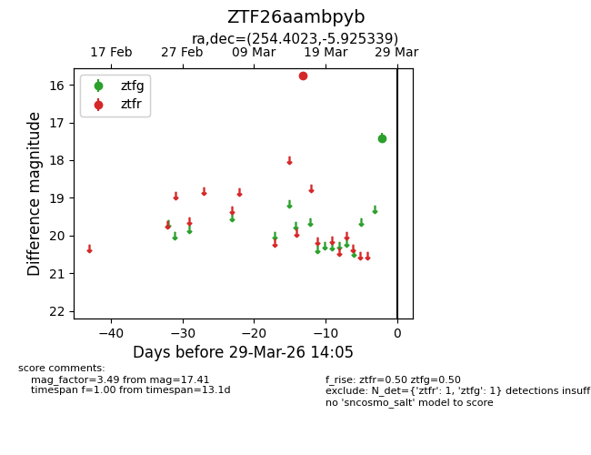
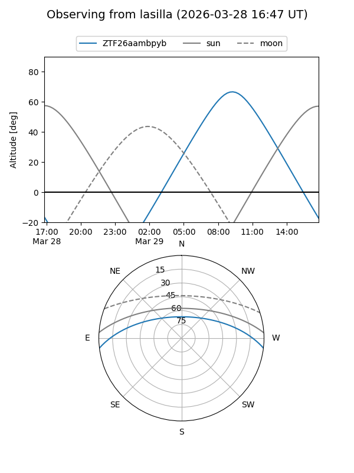
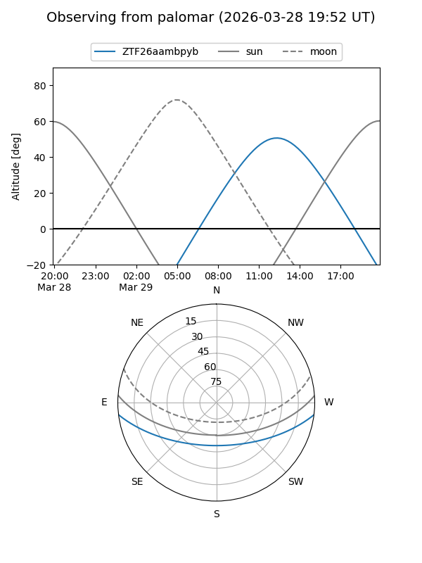

ZTF26aambpyb
Target ZTF26aambpyb at 2026-03-29 14:08
Aliases and brokers:
FINK: link
Lasair: link
ALeRCE: link
alt names
ZTF26aambpyb (ztf,fink_ztf)
Coordinates:
equatorial (ra, dec) = 254.4023,-5.92534
equatorial (HMS+DMS) = 16:57:36.55,-05:55:31.22
galactic (l, b) = (13.5296,+22.00844)
Flags:
Photometry:
last ztfg=17.41, ztfr=15.76
1 ztfg, 1 ztfr detections
Lightcurve

Visibility


Additional plots